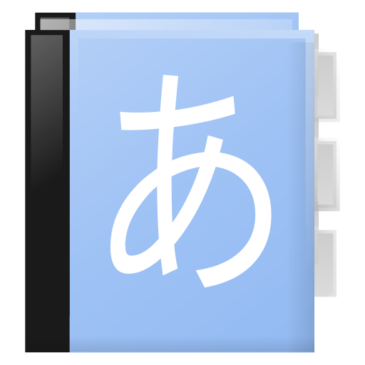

Multi-Functional Dictionary Every Japanese Learner Needs
Save several hundred dollars/euros, no hardware dictionary necessary. The only Japanese dictionary for Android worth paying for.

Q: Aedict 3 does not work on Galaxy Tab 3 10.1 properly
A: As Marko Pareigis found out, Java String compareTo() function is borked on Galaxy Tab 3: "当".compareTo("本") must return value less than 0, but it returns 1 instead. This is a bug in Samsung Android which I cannot fix nor work-around. I have written mail to Samsung about this issue and you can put some pressure on the guys at Samsung to fix this issue. See bug #290 for details.
This issue only applies to the 10.1 Tab3: users of 7" and 8" Tab tablets have reported that Aedict works correctly for them.
Q: Aedict 3 returning less results than Aedict 2, missing the Exact / Ends With / Substring search options
A: In the "Word Search" activity, please click the upper right "filter" icon which will allow you to configure the search options. The Sense part matches the non-JP part: english, french, dutch, etc. May have the following values:
- Exact - exact word match, e.g. "auto" will match "auto mechanic" but not "automechanic"
- StartsWith - "car" will match "crane carrier" but not "ecar"
- EndsWith and Substring are unsupported because of Lucene limitations
Q: Aedict endlessly says that it is missing dictionaries.
A: It seems that Aedict can not properly download all dictionaries. Most commonly, this is because the SD Card is full, or your phone is currently not connected to the internet. Please obtain the Dictionary Health Check:
- In Welcome Screen, by selecting the Expert checkbox and clicking the Dictionary Health Check button, or
- In DownloadManager, by selecting the upper-right Dictionary Health Check menu option
If the health check shows any red text, there is some problem with the dictionary files and Aedict cannot start. To remedy the issue, please read on.
In the Download Manager, please press the Update All Dictionaries button (do not worry, this button will not download ALL dictionaries, it will just download the four required dictionaries and update all dictionaries which you already have downloaded and are out of date) and watch out for any errors reported by Aedict. Also, after the download finishes, please refresh the dictionary list (there is button in the Download Manager upper-right menu for that) and make sure that the following dictionaries are marked as Up to date:
- Jim Breen's JMDict
- Jim Breen's KanjiDIC2
- SOD Stroke Order Diagrams Vector (SOD Stroke Order Diagrams above this one is obsolete and no longer used, please ignore it)
- Tatoeba Example Sentences Project
If they are all Up to date, just press the Android Back button to close the Download Manager and start Aedict itself.
If the dictionaries are stubbornly marked as Downloadable, or they are marked as Up to date yet Welcome Screen is shown to you again and again, then there may be some issue with the download of the dictionaries. As a quick-fix, please check the Expert check-box in the Welcome Screen and press the Delete Dictionaries button, then press the Download button. The dictionary download should now start. After the download finishes successfully, just press the Android Back button to close the Download Manager and start Aedict itself.
If the Welcome Screen is still shown to you, let us check in your phone file-system whether the dictionaries are actually downloaded or not.
By default the dictionaries are downloaded to /sdcard/Android/data/sk.baka.aedict3/files/aedict3/dictionaries. Aedict requires four dictionaries to work properly: SOD (stroke order diagrams), JMDict, Kanjidic2 and Tatoeba Example Sentences. Please use any Android file explorer to make sure that there are the following directories present in the
above-mentioned path:
SOD/svg, containing a single file, sod.datKANJIDIC2/null, containing 10 files named as _0.tis, _0.tii, _0.prx, _0.nrm etc etc. The numbers do not need to match, e.g. the files may be named _4.tis etc.JMDICT/null, containing 10 files named as aboveEXAMPLE_SENTENCE/tatoeba, containing 10 files named as above
If the dictionary files are there, yet Aedict still shows you the Welcome screen, please check the Expert check-box and press the Delete Dictionaries button, then press the Download button.
Q: Missing Kanji Heisig 6th edition information, only Heisig 3rd is shown
A: This change has been introduced by the Aedict upgrade to 3.32 and higher. Please see bug #568 for details. Generally, the quick field list is not fixed anymore only to "Stroke, Grade, JLPT Level, SKIP, Radical, Parts, Unicode, Heisig 3rd." - you can now fully customize what items you wish to see.
To show the 6nd Heisig index, just touch the little information (i) button located right below the kanji itself, find the "Heisig 6th" row and touch the "Pin" icon. You can pin and unpin any information piece you deem important; only the pinned items will appear in the quick list located to the right of the kanji.
The change will not apply immediately, you will need to close the Entry Detail activity and reopen it.
Q: Aedict3 crashes a lot
A: Please use Android-built-in tools to report the problem. However, you might have been bitten by the sticky-bit issue (the Undeletable Directory issue), please see the SD Card: IOException: #1 Operation not permitted question below for more information. It is best to grab a source of the crash (a stack trace) from your phone and send it to me via e-mail. For instructions on how to grab the log, please scroll down to the Aedict 3 log section.
Q: SD Card: IOException: #13 Permission denied
A: You have upgraded to Android 4.4.x on your Sony Z1 phone. Now the SD-Card is read-only for Aedict. If you received Failed to delete /storage/sdcard1/aedict3/dictionaries/SOD/null/sod.dat, then you will need to take out the SD Card, insert it into your PC and manually delete the dictionaries. Then, after Aedict will ask to download the dictionaries, please provide a directory which Aedict can write into. I do not own Z1 so I cannot recommend such directory. Also read below.
Q: SD Card: IOException: #1 Operation not permitted
A: There has been a bug in Aedict for a short period of time, when Aedict created directories whose contents could not be deleted (for tech-savvy, sticky bit: Issue 506 and Android bug 173708. You can verify that you have been bitten by this bug, by obtaining the crash stack trace (please see Aedict 3 log for details on how to do that), and by checking that in the log, there are messages like java.io.IOException: Failed to delete /storage/emulated/0/aedict3/box-1013239839.tmp: #1 Operation not permitted (/storage/emulated/0/aedict3 has sticky bit set! drwxrwxr-t) - please notice the sticky bit part.
Unfortunately there is nothing I or you can do, besides factory-resetting your phone. After the phone is factory-reset, please install a file explorer such as ES File Manager, walk your filesystem and please
make sure that there are absolutely no Aedict-related directories. The usual locations are /storage/emulated/legacy/aedict3 for dictionaries, AND /storage/emulated/legacy/Android/data/sk.baka.aedict3/files
for notepad and other user files. The locations may be different for different phones, for example /storage/emulated/0/aedict3 or other.
If everything else fails, since Aedict 3.18, a special "Emergency Dictionary Location Override" button is available, located in Settings / Dictionaries / Dictionary Manager / upper-right menu. It does not try to delete the dictionaries, instead, it will just abandon those non-writable dictionary files and will ask the user for another location for the dictionaries. I know this is really stupid, but I am tired of endless SD-Card workarounds around endless Android problems on 8400+ phone brands which I do not own.
Q: What is meant by the User Data?
A: Notepad, Tags, Recently Viewed entries and SRS statistics.
Q: What does the Auto-Generated sentence entry mean?
A: When performing search in the Dict mode (in the main screen), you can paste entire sentence into the search box. The sentence will be split into individual words by the built-in sentence analyzer, which will also deinflect verbs and adjectives. Above the list of words a special entry will be produced, containing the original sentence, marked as "Auto-Generated sentence entry". This entry can then be added to, say, notepad (please see bug #537 for details).
The sentence analyzer will kick in not only for whole sentences, but every time the search text is not found in JMDict. Therefore, you may easily see this Auto-Generated sentence entry produced when searching for, say, technical terms not contained in JMDict, or similar cases.
Q: Dropbox integration?
A: The Dropbox integration has been removed. The integration was file-based; sync would overwrite all data in all other devices and conflicts were impossible to merge. Also the file-based solution required all data to be present in-memory, which caused OutOfMemoryErrors and frequent crashes for users with lots of data.
The file-based solution will therefore be removed and replaced by a database-based solution which will be able to sync data into an [UMN](https://gitlab.com/mvysny/umn) server. Currently you can only use UMN server hosted at Aedict Online.
Q: TTS (Text-To-Speech), Japanese reading does not work
A: Older Android phones used the "Pico TTS engine" which does not support Japanese reading and will not work. The recommended way is to switch to the Google TTS Engine (only present in newer Androids), which does support Japanese reading, but only when online. You may also buy commercial Japanese readers such as SVOX or DTalker which are able to synthesize Japanese speech offline. Please note that the speech is synthesized and may not be accurate in some corner cases.
Go into your phone Settings / Accessibility / Text-to-speech Output, to change the TTS engine. If you currently have Google TTS Engine set and Aedict still claims it can not speak Japanese, please enter the Google TTS Engine settings, then "Install voice data" and try installing the data for "Japanese (Japan)".
Please note that the TTS does not work on Blackberry: http://stackoverflow.com/questions/14180103/will-android-default-tts-work-on-blackberry.
Q: How to write づ in romaji?
A: Use xzu to write づ, use xna to write んあ, use xnya, nxya or n'ya to write んや. For all possible writings please see the "Kana Table" screen in Aedict.
Q: SRS/Leitner?
A: Present since Aedict 3.4.13. When enabled in the configuration, Aedict tracks quiz answers for particular kanjis. When next quiz is launched, incorrectly answered kanjis are shown more often than correctly answered kanjis.
Aedict uses the Leitner system and puts the kanjis into boxes numbered 1-5. Kanjis from box 1 have a chance of being present in the quiz five times higher than kanjis from box 5.
Q: Hispadic?
Aedict 3 uses JMDict which has Hispadic integrated by default, therefore it is present by default. Open the Configuration and set the dictionary language to Spanish and it should work, e.g. search for "madre". Please note that if an entry does not have Spanish translation, English translation is displayed instead.
Q: Kanjipad does not recognize kanjis well
A: Built-in kanjipad expects correct stroke order and direction, and most importantly, it expects correct stroke count. The analyzer algorithm was stolen (do you know that great artists steal? :-) from Todd David Rudick.
You can purchase the Aedict Kanjipad Extension, which uses different matching algorithm which matches kanjis regardless of the drawing/stroke order. Simply open the Aedict configuration and set the "Kanji Pad" configuration option to KanjiPad Extension; Aedict will install the extension automatically.
Q: EOFException during dictionary download
A: EOFException tends to happen when the download gets interrupted because of network issues such as connectivity loss and timeouts. Please try to download the dictionaries once again, perhaps on a WIFI with strong signal and fast download.
Q: Copy+Paste in Aedict 3
A: Regarding CopyPaste from Aedict3: Both Copy&Paste and "Add to Notepad" are available in Aedict 3 in any list view which shows dictionary entries. Just enter the selection mode by long-clicking any item, select a couple of items and then press "Copy/Paste" or "Add to Notepad" upper-right ActionBar icons.
Regarding CopyPaste to Aedict3: there are two ways to do this. One way works with programs which supports the "Share" functionality, such as the Chrome Browser. In such programs, just select a portion of text, activate the "Share" menu and select Aedict - the text will automatically be searched and/or analyzed. Other way to do this is to select text, copy it into the clipboard, then activate Aedict and paste the text into the omnisearch box. Note that you can add permanent notification icon for Aedict and thus make it always accessible, by activating the appropriate option in the Aedict configuration.
Q: Launch quiz for an entire notepad category?
A: You can long-click on a category item, then select all items, then launch quiz from selected items. This way you can launch quiz from an entire category.
To launch quiz from entire notepad, just click on the question mark icon in the Notepad screen action bar (upper-right section of the screen).
Q: Some kanjis have no translation
A: Yes, for example 夨 has no translation present in the KanjiDict XML file.
Q: Aedict downloads dictionaries to the internal memory
A: On some phones an incorrect path to the SDCard is returned, which points to the internal memory instead. It is not yet clear on how to detect SDCard properly on all phones, see http://stackoverflow.com/questions/5694933/find-an-external-sd-card-location. As a workaround, Aedict 3.4.6 now allows you to override this detection mechanism and specify the path yourself. To do that, enter Aedict configuration and click on Dictionary Manager, then delete all dictionaries. Then exit Aedict 3 and start it again - the Welcome Screen should be now shown. press the Expert Settings checkbox and fill in the correct path. You may use a file manager such as ES File Manager to find the correct path to the SD Card.
Take care though, on some phones the SD Card may not be writable. See the next question for details.
Q: How to import notepad from Aedict 2
A: This is unfortunately no longer possible with Aedict 3.40 and newer.
Q: Backup of Aedict 3 Notepad
A: You can back up the user data to the internal phone memory, Dropbox or OwnCloud. To back up via Dropbox, enable Dropbox integration in Aedict 3. Then, head to Settings and perform the backup itself. You can then link your Dropbox account to your PC and back up the bin files by copying them somewhere. To restore from a backup, just start up your PC and copy the files back to the Dropbox/Apps/Aedict directory.
Aedict 3.4.7 also allows notepad/tags/recent local backup, to the SD Card. You can have at most 10 backups, which are identified by the date when the back up has been created. The backup functionality is accessible from the Configuration screen.
Q: Aedict 3 log
A: Aedict 3 logs what it is doing, to a standard Android log. If Aedict 3 does not work properly or keeps crashing, please drop me an email. During our conversation, I may ask for a log produced by Aedict 3. Please follow the following text to deliver the log to me :)
You can retrieve Android system log (which includes Aedict 3 logging messages) by following these steps:
- Download Android SDK, the "GET THE SDK FOR AN EXISTING IDE" link.
- Enable debugging mode on your phone or google for "android enable debug mode"
- Connect your phone via the USB cable with your computer
- Start the device monitor
- Switch to the DDMS perspective - the logcat window is located at the bottom of the screen.
Caution - the log may contain sensitive information such as phone numbers you have dialed etc. You should filter the log to only contain "sk.baka.aedict3" lines (these are lines produced by Aedict 3 logging). You can then send me these lines to my mail, or even better - you can send this file to yourself (via Mail, but also via Dropbox, or perhaps Google Drive), and check for any sensitive information. You can then edit the log and send it to me. This should help me knowing what is going on :)
The most important part is the crash information itself, or an exception stack-trace as it is called. It looks like this:
08-09 07:28:56.193 11090-11090/sk.baka.aedict3 E/AndroidRuntime﹕ FATAL EXCEPTION: main
Process: sk.baka.aedict3, PID: 11090
java.lang.RuntimeException: Unable to start activity ComponentInfo{sk.baka.aedict3/sk.baka.aedict3.MainActivity}: java.lang.RuntimeException: Greetings :-D
at android.app.ActivityThread.performLaunchActivity(ActivityThread.java:2216)
at android.app.ActivityThread.handleLaunchActivity(ActivityThread.java:2265)
at android.app.ActivityThread.access$800(ActivityThread.java:145)
at android.app.ActivityThread$H.handleMessage(ActivityThread.java:1206)
at android.os.Handler.dispatchMessage(Handler.java:102)
at android.os.Looper.loop(Looper.java:136)
at android.app.ActivityThread.main(ActivityThread.java:5140)
at java.lang.reflect.Method.invokeNative(Native Method)
at java.lang.reflect.Method.invoke(Method.java:515)
at com.android.internal.os.ZygoteInit$MethodAndArgsCaller.run(ZygoteInit.java:795)
at com.android.internal.os.ZygoteInit.main(ZygoteInit.java:611)
at dalvik.system.NativeStart.main(Native Method)
Caused by: java.lang.RuntimeException: Greetings :-D
at sk.baka.aedict3.MainActivity.onCreate(MainActivity.java:87)
at android.app.Activity.performCreate(Activity.java:5231)
at android.app.Instrumentation.callActivityOnCreate(Instrumentation.java:1087)
at android.app.ActivityThread.performLaunchActivity(ActivityThread.java:2170)
at android.app.ActivityThread.handleLaunchActivity(ActivityThread.java:2265)
at android.app.ActivityThread.access$800(ActivityThread.java:145)
at android.app.ActivityThread$H.handleMessage(ActivityThread.java:1206)
at android.os.Handler.dispatchMessage(Handler.java:102)
at android.os.Looper.loop(Looper.java:136)
at android.app.ActivityThread.main(ActivityThread.java:5140)
at java.lang.reflect.Method.invokeNative(Native Method)
at java.lang.reflect.Method.invoke(Method.java:515)
at com.android.internal.os.ZygoteInit$MethodAndArgsCaller.run(ZygoteInit.java:795)
at com.android.internal.os.ZygoteInit.main(ZygoteInit.java:611)
at dalvik.system.NativeStart.main(Native Method)Q: What does "Read from Preferences.xml value" mean?
A: This is unfortunately no longer available with Aedict 3.40 and newer.
Q: Mass export to Anki/AnkiDroid?
A: Mass export to the Desktop Anki is possible, via CSV export. You can define in Aedict 3 configuration what information is exported. You can also define a completely custom export file format, which does not even have to be a CSV. This way you can export to e.g. Excel or other software.
Regarding AnkiDroid: Support for mass export to AnkiDroid has been added in Aedict 3.9 and requires AnkiDroid 2.5 or higher. You can no longer define the order (as in Kanji > Kana+English, Kanji+Kana > English, English > Japanese) - instead, every entry is exported with three card types, which you can then activate via AnkiDroid. Please see bug #596 for details.
Q: Heisig support
A: Heisig quiz was added in Aedict 3.4.12, please update the app to gain access to the quiz. Heisig kanji information is available in the newest dictionaries - please update the dictionaries to gain access to this information.
The Heisig Index numbers are valid for Heisig 3rd edition. Since 3.4.18, Aedict also supports the 6th edition numbers - please update the dictionaries and select the Edition number in Aedict configuration.
Q: Kotowaza
A: Available since Aedict 3.4.13 - just download the Kotowaza dictionary and it will be automatically shown in the "Examples sentences" tab (with high priority - first matching kotowaza entries are shown, then Tatoeba example sentences are shown). You can also search for kotowaza in the main search screen, by forcing search in example sentences (click the upper wrench icon and then select "Examples" search).
Q: Why are some JMDict kanas underlined?
A: Underlined kanjis/reading marks the common kanji/reading for that entry.
Q: Why is the soft keyboard not shown?
A: When the main window is displayed and the cursor is inside the search text box, the keyboard is not initially shown. This is to let you see the full list of previously searched entries, and/or live search results.
You can force Aedict to show the soft keyboard, by opening the Aedict configuration and making sure that the "Omnisearch: Show Soft Input" configuration option in the "GUI" section is checked.
Q: Sentence analysis?
A: Aedict supports japanese sentence analysis, or sentence breakdown. Just paste any japanese sentence to the search box and make sure that the "Dict" mode is selected (just click the upper-right "wrench" icon and select "Search In":"Dict"). It will take some time but Aedict will eventually break down the sentence into individual words.
Q: Search in Example Sentences
A: Please open the main search screen and click the upper-right "cog wheel" icon - this should open the Advanced Search Settings view. Then, select "Search In":"Examples". You can now enter any text into the search box and example search will be performed automatically.
Q: Wadoku or German support?
If you wish to use newest Wadoku dictionary, head to Aedict 3 Settings, Dictionaries and download the Wadoku dictionary. Do not forget do activate the dictionary itself, in the "Custom Dictionary" settings item (or in the Main Activity, in the screwdriver menu).
Note that the JMDict already contains German translations. However, it is not known on how these projects are in sync.
Q: How many Kanjis does Aedict 3 contain?
A: Aedict3 contains the entire Kanjidic2 from Jim Breen (I index and upload kanjidic update for Aedict3 once per month, so it is always reasonably up-to-date). Currently (as of Nov 6th, 2014), Kanjidic2 contains 13108 kanjis.
Q: Can I hide / disable furigana?
A: Yes, please head to Settings / Expert Settings / Show Furigana - just uncheck the check box and you should be good to go.
Q: Where is Aedict Online?
A: Please note: Aedict Online is not yet completed and should be considered alpha quality. Some stuff is not yet implemented, some stuff is not yet optimized, etc. It just serves as a demo of things to come.
Q: Dictionaries fail to get downloaded
A: The dictionaries are located at https://www.baka.sk/aedict3/dictionaries/ - please try opening that with your browser - perhaps there is a firewall preventing you from reaching that site?
Q: The pronounciation/pitch data is off / where does the data come from?
A: Please see the Bug report #819 for more details on where the pitch data comes from and how to fix the data. My indexer will then automatically use the new data when the dictionaries are indexed on a monthly basis.